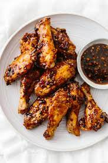
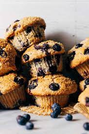

Crispy Garlic Chicken Wings
Soy garlic ginger chicken wings are a sticky, sweet and flavorful appetizer with a kick. They are infused with a soy, ginger, and garlic marinade, then baked until golden. Serve these tasty wings during game day or your next party.
Ingredients
- Chicken Wings
- Avocado Oil
- Salt and Pepper
- Honey
- Soy Sauce
- Ginger
Steps
- Preheat oven to 425 degrees Fahrenheit.
- Place a piece of parchment paper on a baking sheet then place a wire rack on top. Spread out the wings on a single layer on the baking sheet.
- While the wings are cooking, make the sauce. Add the honey, soy sauce, garlic, ginger, and water to a small pot.
Bluberry Muffin
These blueberry muffins are quick and easy with a moist and tender center bursting with blueberries and perfectly golden brown top. They are extra easy to make, too.
Ingredients
- Frozen Blueberries
- Flour
- Sugar
- Milk
- Eggs
- Baking Powder
Steps
- Whisk flour, sugar, baking powder, and a little salt in a large bowl.
- Add oil, an egg, milk, and vanilla extract then stir with a fork until blended.
- Mix in the blueberries, divide the batter between muffin cups and bake.